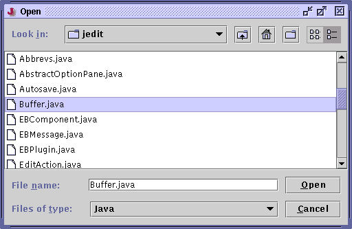

There are various ways to open a file for editing. File>Open File (keyboard equivalent: Control-O) pops up a dialog box allowing you to browse the file system and select a file to open. For a detailed treatment of this dialog box, see the section called The File System Browser. jEdit remembers the last few edited files; they listed in the File>Recent Files menu. The File>Current Directory menu lists all files in the current buffer's directory.
File>Insert File is similar to Open File, except that it inserts the contents of the specified file into the current buffer, instead of creating a new buffer.
Files that you do not have write access to are automatically opened read only. Files can also be forced to open read only from the command line by specifying the -readonly option.
Figure 3-1. The Open File dialog box
